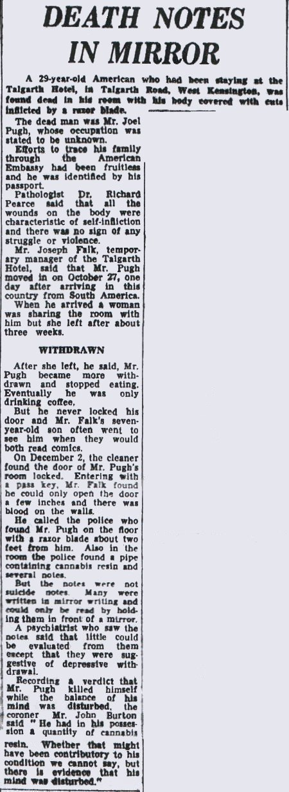

|
Joel Dean Pugh's British newspaper article |
| |
|
 |
|
Hammersmith,
England newspaper article, December 3, 1969 |
|
Courtesy
of Tony Phillips |
| |
|
Los
Angeles Police Department detectives thought that the Pugh
investigation in England "stunk to high heaven." Joel Dean
Pugh was the husband of Sandra Good, a Manson follower. He had also
been with the group for a time but had left. He tried to talk Sandra
into leaving also, something that was not appreciated by the powers
that be in the Family. |
|
|
|
This
article only gives the surface of the Pugh tragedy. Vincent Bugliosi
said that Joel's room was on the ground floor and could be entered
through a window. The door was locked from the inside when his body
was found. If he was killed and it was made to look like a suicide,
the killer could have easily locked the door and left through the
window. NO PRINTS WERE EVER TAKEN! Bugliosi brings out that
Pugh's throat was cut, twice, as were both wrists and there were
many cuts all over his body. Plus, there was a sheet placed over the
lower part
of his body. Pugh had checked into the Talgarth Hotel on 10/27/69.
On the Halloween card sent by Zodiac there was a skeleton with the lower
part of it
covered by a pumpkin. The postmark date on the card was 10/27/70.
Another Zodiac one-year-later curious coincidence? |
|
|
|
The
LAPD detectives got a "secret report" from the State
Department saying that Bruce M. Davis had been in England at the
time of Pugh's "suicide." Davis returned to the US shortly
after this. This was probably due to hearing the bad news of and
sudden reversal of fortunes for Manson and other Family members in
their trial during December 1969. Davis was a close disciple of
Manson and he would have been depressed. This is also the same month
and year that Zodiac wrote his "I am drownding" depression
letter to famed attorney Melvin Belli asking for legal help. |
| |
|
The
reverse writing with drawings found in Pugh's room is interesting.
One was: "Jack and Jill went up the hill to fetch a pail of water.
Jack fell down and broke his crown and Jill came tumbling
after." Zodiac sent a letter to KHJ-TV, Channel Nine, in Los
Angeles that had some reverse writing on the envelope.
|
|
|
|
Zodiac's
11/09/69 letter states: "So I shall change the way the
collecting of slaves. I shall no longer announce to anyone when I
comitt my murders, they shall look like routine robberies, killings
of anger, & a few fake accidents, etc." |
|
|
|
Does
this mean fake suicides, too? |
|
|
|
|
|
Back
Contents
Top
of page |
|
|
|
|